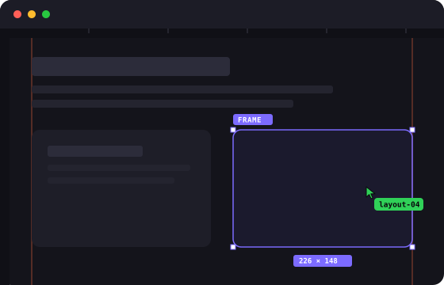

Says what it is
The HUD and the screen reader announcement open with “Simulation” in English, Spanish, French, German, Italian, Dutch and Swedish.
Vanilla JS · no dependencies · strict CSP
agent-build is a simulation. One button hides the page and a swarm of agent cursors puts it back together, block by block, with selection boxes, sizes, guides and canvas rulers. It always tells your visitors it is a simulation, in their language.
The simulation in English, español, français, Deutsch, italiano, Nederlands, português or svenska.
Your system asks for reduced motion, so the button stays hidden: the library never runs the simulation for you.
The stylesheet, the script with defer and a hidden button. The script shows the button only when the visitor's browser can run the simulation and nobody asked for less motion.
<link rel="stylesheet" href="https://cdn.jsdelivr.net/npm/@magnoscg/agent-build@1.0.2/dist/agent-build.css" integrity="sha384-05hwZ3q4HJ9o/dQNPNkjnJdZV0YkbJVJXkN6sSD3odKGE6XlbMumrEuvqelDGK6g" crossorigin="anonymous">
<script src="https://cdn.jsdelivr.net/npm/@magnoscg/agent-build@1.0.2/dist/agent-build.js" integrity="sha384-2zDbfMr7HgEbJOK3dttoFKLYDX6Gcl13KHwuJ68syqFs46cx+zQ3v/9ONlcIq4zL" crossorigin="anonymous" defer></script>
<button data-agent-build hidden></button>Or install it with pnpm add @magnoscg/agent-build and import @magnoscg/agent-build and @magnoscg/agent-build/agent-build.css from your bundle.
The HUD and the screen reader announcement open with “Simulation” in English, Spanish, French, German, Italian, Dutch and Swedish.
Blocks are hidden with visibility, so the layout never moves, and come back with Web Animations. Its own layers are gone when it ends.
No inline styles, no innerHTML, no eval. This very page runs it with style-src 'self' and Trusted Types enforced.
Under prefers-reduced-motion the button never appears and AgentBuild.start() refuses to run.

header, footer, section, article, aside and anything that paints a background, a shadow or a border.Set them as data attributes on the button, or pass them to AgentBuild.start(), which wins over the attributes.
| Attribute | Option | Default | What it does |
|---|---|---|---|
data-agent-pace | pace | 1 | Multiplies every duration, from 0.25 to 4. 2 is twice as slow. |
data-agent-count | count | 20, or 14 on narrow screens | How many agents, from 1 to 40. |
data-agent-accent | accent | #7C6BFF | Any CSS colour for boxes, guides and the progress bar. |
data-agent-hub | hub | Four blocks, inline SVG | URL of the icon the agents fly out of. |
data-agent-frames | frames | header, footer, section, article, aside | Selector for boxes revealed before their content. |
data-agent-atoms | atoms | Headings, text, media, controls | Selector for blocks revealed whole. |
data-agent-pop | pop | Media and controls | Selector for the blocks that fade in instead of being typed. |
AgentBuild.start({ pace: 0.5, count: 8 }); // false when it cannot run
AgentBuild.stop();
document.addEventListener('agentbuild:end', (event) => {
console.log(event.detail); // { skipped, built, total, seconds }
});